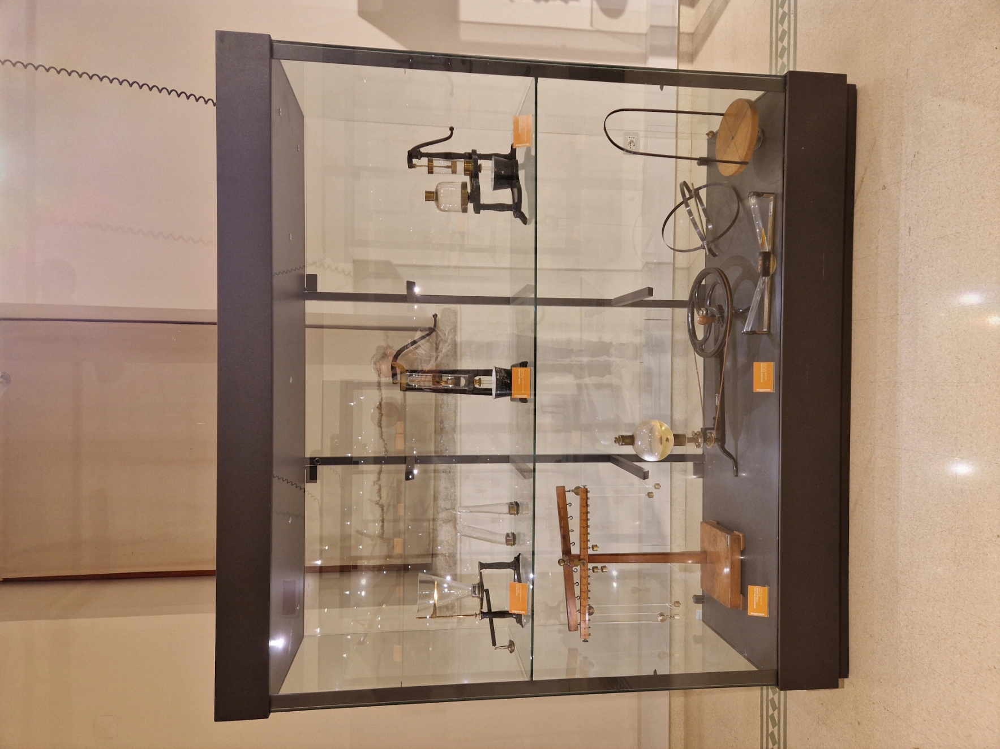

Meccanica #1

La vetrina raccoglie strumenti dedicati allo studio della meccanica dei fluidi e delle macchine semplici. Sono esposti diversi tipi di pompe – una pompa premente e aspirante e una pompa aspirante – utilizzate per dimostrare il principio della pressione atmosferica e il movimento dei liquidi. Accanto si trovano i vasi di Pellat, impiegati per esperimenti sul comportamento dei fluidi comunicanti. Completano l’esposizione un apparecchio per le leve di primo genere, utile per illustrare le leggi dell’equilibrio, e una macchina rotatoria, pensata per mostrare gli effetti della forza centrifuga e del moto circolare.
Qui puoi trovare: